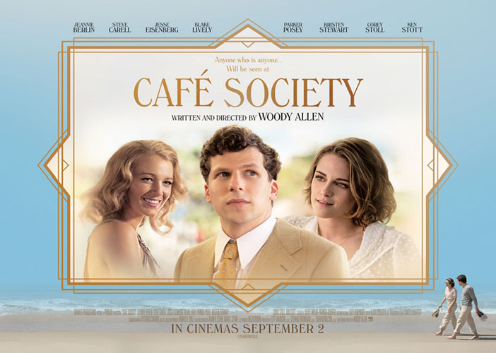
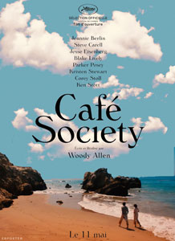
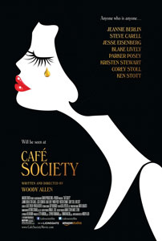
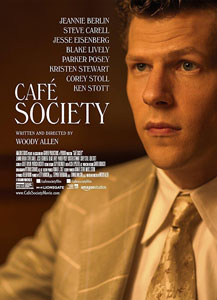
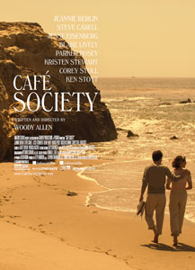
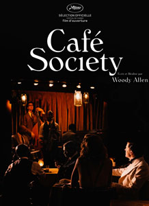
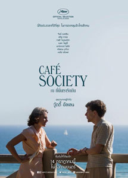

Set in the 1930s, Woody Allen's bittersweet romance follows Bronx-born Bobby Dorfman (Jesse Eisenberg) to Hollywood, where he falls in love, and back to New York, where he is swept up in the vibrant world of high society nightclub life.
Centering on events in the lives of Bobby's colorful Bronx family, the film is a glittering valentine to the movie stars, socialites, playboys, debutantes, politicians, and gangsters who epitomised the excitement and glamour of the age.
This was Woody Allen's first film since Love and Death (1975) made without co-executive producer Jack Rollins, who died in 2015 at the age of 100. Rollins was Allen's longtime manager, and they collaborated for over 45 years.
This was the first time that Woody Allen had narrated a film without appearing on screen since Radio Days (1987).
It was the first collaboration between Woody Allen and cinematographer Vittorio Storaro - who had previously worked with Bernardo Bertolucci (The Conformist), Carlos Saura (Tango) and Francis Ford Coppola (Apocalypse Now) - and was Allen's first film shot in 2:00:1 aspect ratio, which was commonly used by Storaro.
The 1930s stars shown, mentioned, or referred to include Barbara Stanwyck, Marion Davies, Ginger Rogers, Bette Davis, Greta Garbo, Joan Crawford, Jean Harlow, Joan Blondell, Gloria Swanson, Rudolph Valentino, Fred Astaire, Robert Taylor, Robert Montgomery, James Cagney, William Powell, Clark Gable, Gene Raymond, Hedy Lamarr, Paul Muni and Ronald Colman.
In one scene, Jesse Eisenberg's character goes sightseeing at the Grauman's Chinese Theatre. Kristen Stewart actually has her hands and feet imprinted there.
Bruce Willis was originally cast in the role of Phil Stern but had to leave due to his scheduling conflicts with the Broadway stage adaptation of the Stephen King novel Misery. Steve Carell was cast to replace Willis.
"Cafe Society" was a phrase coined by Maury Henry Biddle Paul in 1915 to describe the "beautiful people" who socialized and threw parties in the high profile cafés and restaurants in New York, Paris, and London.
Los Feliz, Los Angeles, California;
New York City, New York;
Bow Bridge, Central Park, Manhattan, New York City (Vonnie and Bobby kissing in New York);
The Vista Theatre, 4473 Sunset Drive, Los Angeles, California (Bobby and Vonnie exiting the cinema);
Castle Green Apartments, 99 S. Raymond, Pasadena, California;
Crossroads of the World Center, 6671 Sunset Blvd., Hollywood, Los Angeles, California (Bobby calling long distance);
Morningside Drive, Manhattan, New York City, New York (Bobby and Vonnie walking in New York);
918 N Roxbury Dr, Beverly Hills, California (Bobby and Vonnie in front of "Joan Crawford's villa").
"First a murderer, then he becomes a Christian. What did I do to deserve this? Which is worse?"
"My mother cooks spaghetti and meat balls. But when a Jew cooks something, it's always overcooked 'cause they wanna make sure to kill all the germs."
"Unrequited love kills more people in the year than tuberculosis."
"[The film's] power builds over time through the subtle gut punches thrown at each character's prideful egos. Vittorio Storaro's sun-kissed cinematography makes that transition entirely seamless." - Glenn Heath Jr. : San Diego CityBeat
"If it doesn't reach the heights of Woody's best ... it still has several rich touches, including a luminous performance by Kristen Stewart." - Adam Graham : Detroit News





